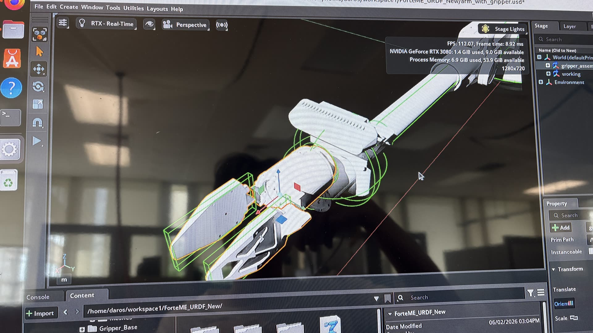

01 · Robot Modeling
URDF & Simulation Setup
Built the simulation-side representation of the existing custom arm design.
- Extracted center of mass and inertia-tensor values from Onshape and created the URDF
- Simplified collision geometry from the original 3D mesh to capsule-based primitives
- Applied IK in Isaac Sim and corrected abnormal initial motion by defining the starting configuration
- Modeled the closed-chain gripper using a combination of linear and mimic joints